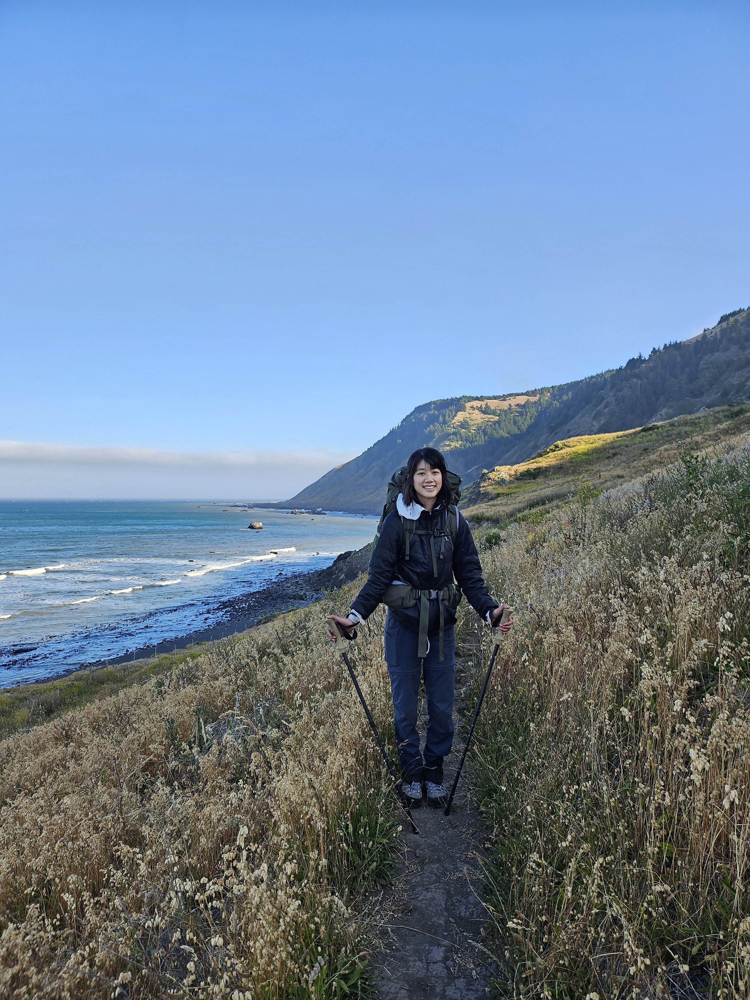

ALISON TANG
Scientist, she/her
Scientist, she/her
I am a computational biologist with expertise in genomic, epigenetic, and transcriptomic data analysis with a primary focus in cancer research. I am thankful to have had brilliant mentors over the years who approach cancer research with much rigor and passion; as such, one of many learnings I have emulated is the care and integrity in the work that I do. I strive to remain cognizant of the patients whose data that I work with -- patients who I will never know but can only begin to recognize the challenges, sacrifices, and strength they all possess. Ultimately, I hope to contribute to research that can improve patient lives in this collective fight against cancer.
For my Ph.D., I built a tool to analyze long read third-generation sequencing data, which enabled us to delve into the perturbed mRNA splicing landscape in CLL patients, characterize full-length native RNA transcripts, and identify RNA editing haplotypes associated with LUADs.
Currently, I am a computational biologist at Freenome, where I have helped drive projects for tumor-naive monitoring of residual disease in CRC patients and build multiomic/multinomial machine learning models for subtype classification in IMpower133 SCLC patients and IMvigor130 UC patients.
I spend my free time reading (favorites include The Overstory, Pachinko, and When Breath Becomes Air), knitting, crocheting, climbing (mostly indoor bouldering), and volunteering.

› Freenome
Freenome has developed blood tests for noninvasive profiling of patient tumor/immune biology and drug response; if you have an interest in Freenome's technologies and access to patient samples for those who could benefit, please message me on LinkedIn.
› University of California, Santa Cruz
› University of California, Berkeley
This site last updated May 2026.

Thank you for visiting my site!